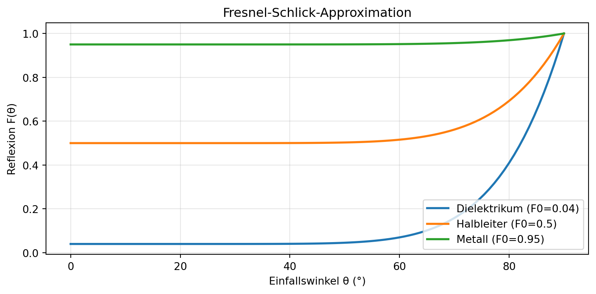

Gruppe 7 – VCDE
2026-06-25
Warning
Dieser Abschnitt ist nur als Referenz gedacht. Vor der echten Präsentation einfach alle Folien bis zur Markierung “Ende Showcase” löschen.
Standardmäßig auf einmal:
Mit . . . (drei Punkte) kannst du manuell weitere Inhalte einblenden lassen.
incremental)Bild aus eurem pages/images/ einbinden:
Mit Größenangabe: {width=60%} oder {height=400px}.
Inline: \(E = mc^2\) — funktioniert mitten im Text.
Block:
\[ L_o(\mathbf{x}, \omega_o) = L_e + \int_\Omega f_r\,L_i\,(\omega_i \cdot \mathbf{n})\,d\omega_i \]
Links: Phong
Rechts: PBR
| Modell | Energieerhaltung | Realismus |
|---|---|---|
| Phong | ❌ | niedrig |
| Cook-Torrance | ✅ | hoch |
| Disney | ✅ | sehr hoch |
Dieser Teil ist sofort da.
Dieser Teil kommt erst beim ersten Klick.
Dieser Teil kommt beim zweiten Klick.
Und dieser hier sogar in Rot.

→ Plots werden beim Rendern automatisch eingebettet.
Note
Note-Box für allgemeine Hinweise.
Tip
Tipp für die Praxis.
Warning
Achtung-Box.
Important
Wichtige Aussage hervorheben.
Setze hinter den Titel {background-color="#1f2937"} — diese Section-Folie (# 🧪 SHOWCASE) macht genau das.
Auch möglich: {background-image="bild.jpg"} für Vollbild-Bilder.
S-View)Schreibe so:
Mit S öffnet sich ein zweites Fenster mit Notizen + Timer + Vorschau der nächsten Folie.
Tip
Ab hier beginnt das eigentliche Grundgerüst eurer Präsentation. Alles davor kann gelöscht werden.
TODO: Kernaussage aus
index.qmd— physikalisch korrekte Simulation von Licht-Material-Interaktion.
TODO: 3-4 Vorteile als Bullets (Fotorealismus, Konsistenz, Workflow, Industriestandard).
TODO: Babylon-Goldkugel-Demo aus
index.qmdeinbetten (Canvas-ID anpassen!).
TODO: Kurz-Erinnerung, die drei Komponenten (Ambient, Diffuse, Specular).
TODO: Demo aus
pages/1_phong_grenzen.qmd(zwei Canvases nebeneinander) übernehmen.
TODO: Phong-Slider-Demo aus Kapitel 1.
TODO: Die Vergleichsfragen aus Kapitel 1 — als Bullets oder Frage-Fragments.
TODO: Brücke zu Kapitel 2 — Motivation für physikalische Grundlagen.
TODO: Formel + kurze Worte zu jedem Term.
TODO: Definition + Rolle in der Rendering-Gleichung.
TODO: Grundidee — Oberflächen aus mikroskopischen Spiegelchen.
TODO: Die Formel mit den drei Termen F, D, G.
TODO: Schlick-Approximation + Diagramm (Python-Plot ist im Showcase).
TODO: GGX/Trowbridge-Reitz — was steuert Roughness?
TODO: Self-Shadowing der Mikrofacetten.
TODO: Lambert vs. Disney-Diffuse.
TODO: \(k_d + k_s \leq 1\) — warum das in Phong fehlt.
TODO: Alles zusammensetzen — Cook-Torrance + diffuse + Energieerhaltung.
TODO: Quizfrage(n) ans Publikum — vielleicht mit
incremental-Reveal der Antwort.
TODO: Industriestandard, warum Disney die Parameter vereinfacht hat.
TODO: Exkurs aus Kapitel 3 — sRGB vs. linear, gemessene Werte.
TODO: Globale Parameter vs. Texture Maps — Demo aus Kapitel 3.
TODO: Warum direkte Beleuchtung alleine nicht reicht — Brücke zu Kapitel 4.
TODO: Was bisher fehlt — indirekte Beleuchtung aus der Umgebung.
TODO: HDR-Environment-Maps, Cubemaps.
TODO: Interaktive Demo aus
pages/4_ibl.qmdeinbetten.
TODO: Split-Sum-Approximation — Übersichtsfolie.
TODO: Vorfilterung nach Roughness.
TODO: 2D-LUT, einmal pro Engine vorberechnet.
TODO: \(L_o \approx \text{Prefilter}(R, \alpha) \cdot \text{LUT}(N\cdot V, \alpha)\).
TODO: Aus Kapitel 6_X — Verbindung zwischen Material und Zeit.
TODO: Interaktive Demo aus
pages/6_X.qmd.
TODO: Grenzen ehrlich benennen.
TODO: Prozeduraler Entwurf → eigene Assets.
TODO: 3–4 zentrale Botschaften als Bullets.
Vielen Dank! 🎨
Celia Baumann · Stefan Jordan · Alexander Kohl